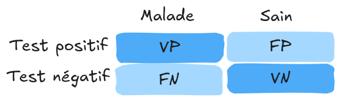

Métricas de evaluación de modelos#
La evaluación es una etapa clave en el entrenamiento de un modelo. Hasta ahora, hemos utilizado principalmente la pérdida en los datos de prueba o métricas básicas como la precisión. Dependiendo del problema a resolver, diferentes métricas permiten evaluar diversos aspectos del modelo. Este curso presenta varias de ellas, para que las utilices según tus necesidades.
Métricas para clasificación#
Matriz de confusión#
En clasificación binaria, las predicciones del modelo se pueden visualizar de la siguiente manera:

Fuente: Wikipedia
Aquí están los términos básicos:
Falso positivo (FP): Elemento clasificado como positivo cuando en realidad es negativo.
Verdadero positivo (VP): Elemento clasificado como positivo y que efectivamente lo es.
Falso negativo (FN): Elemento clasificado como negativo cuando en realidad es positivo.
Verdadero negativo (VN): Elemento clasificado como negativo y que efectivamente lo es.
Estos conceptos se pueden representar en una matriz de confusión:

Nota: En una clasificación multiclase, la matriz de confusión ayuda a identificar las confusiones entre las diferentes clases.
Precisión, exhaustividad y especificidad#
A partir de la matriz de confusión, se pueden calcular varias métricas:
Precisión: \(Precisión=\frac{VP}{VP+FP}\). Proporción de elementos positivos correctamente clasificados entre todos los clasificados como positivos.
Exhaustividad (o sensibilidad): \(Exhaustividad=\frac{VP}{VP+FN}\). Proporción de elementos positivos correctamente clasificados entre todos los elementos positivos reales.
Especificidad (o selectividad): \(Especificidad=\frac{VN}{VN+FP}\). Proporción de elementos negativos correctamente clasificados entre todos los elementos negativos reales.
Exactitud#
La exactitud (cuidado, no confundir con la precisión) mide el número de predicciones correctas sobre el total de predicciones. Su fórmula es: \(Exactitud=\frac{VP+VN}{VP+VN+FP+FN}\)
Nota: Usar con precaución en casos de desequilibrio de clases (class imbalance).
Puntuación F1#
La puntuación F1 es una métrica comúnmente utilizada. Es la media armónica entre precisión y exhaustividad: \(F1=2 \times \frac{precisión \times exhaustividad}{precisión + exhaustividad}\)
Si la precisión y la exhaustividad son cercanas, la puntuación F1 estará cerca de su promedio.
Curva ROC#
La curva ROC (Receiver Operating Characteristic) muestra el rendimiento de un modelo de clasificación binaria a diferentes umbrales. Incluye:
Eje X: Tasa de falsos positivos (\(1-especificidad\)). Proporción de elementos negativos mal clasificados como positivos.
Eje Y: Tasa de verdaderos positivos (\(exhaustividad\)). Proporción de elementos positivos bien clasificados.
Cada punto de la curva corresponde a un umbral de decisión diferente.

Fuente: Blogpost
Para evaluar un modelo, se calcula el área bajo la curva (AUROC):
Clasificador aleatorio: AUROC = 0.5
Clasificador perfecto: AUROC = 1
Pérdida logarítmica#
Se puede utilizar simplemente el valor de la pérdida en los datos de prueba como métrica. Dado que la pérdida refleja el objetivo, esto puede ser suficiente en muchos casos.
Métricas para regresión y autoencodificadores#
Error Absoluto Medio (MAE)#
En los modelos de regresión o autoencodificadores, se comparan las predicciones con los valores reales calculando una distancia. El Error Absoluto Medio (MAE) es la media de los errores absolutos: \(\text{MAE} = \frac{1}{n} \sum_{i=1}^{n} \left| y_i - \hat{y}_i \right|\)
Error Cuadrático Medio (MSE)#
Se utiliza frecuentemente el Error Cuadrático Medio (MSE), que es la media de los cuadrados de los errores: \(\text{MSE} = \frac{1}{n} \sum_{i=1}^{n} \left( y_i - \hat{y}_i \right)^2\)
Métricas para detección y segmentación#
Precisión Promedio (AP) y Precisión Promedio Media (mAP)#
En detección, no se puede evaluar simplemente la precisión. Es necesario considerar diferentes umbrales de exhaustividad para una evaluación pertinente. La precisión promedio (AP) se calcula de la siguiente manera:
\(\text{AP} = \int_{0}^{1} \text{Precisión}(r) \, \text{d}r\)
O de manera discreta:
\(\text{AP} = \sum_{k=1}^{K} \text{Precisión}(r_k) \cdot (r_k - r_{k-1})\)
Donde:
\(\text{Precisión}(r)\): Precisión en el nivel de exhaustividad \(r\)
\(K\): Número de puntos de evaluación de la exhaustividad
\(r_k\) y \(r_{k-1}\): Niveles de exhaustividad en los puntos \(k\) y \(k-1\)
La precisión promedio media (mAP) es la media de las AP para todas las clases en un problema de detección multiclase. Proporciona una evaluación global del modelo considerando todas las clases.
\(\text{mAP} = \frac{1}{C} \sum_{c=1}^{C} \text{AP}_c\)
Intersección sobre Unión (IoU)#
En detección y segmentación, el IoU (Intersección sobre Unión) es una métrica clave. En detección, se fija un umbral de IoU por debajo del cual una detección se considera inválida (no contabilizada para el mAP). En segmentación, el IoU evalúa directamente la calidad.
\(\text{IoU} = \frac{|\text{Intersección}|}{|\text{Unión}|} = \frac{|\text{Predicción} \cap \text{Realidad}|}{|\text{Predicción} \cup \text{Realidad}|}\)
Nota: El IoU penaliza los objetos pequeños y las clases raras. Para reducir este sesgo, se puede utilizar el coeficiente de Dice.
Coeficiente de Dice#
En segmentación, se utiliza frecuentemente el coeficiente de Dice en lugar del IoU. Su fórmula es:
\(\text{Dice} = \frac{2 \times |\text{Predicción} \cap \text{Realidad}|}{|\text{Predicción}| + |\text{Realidad}|}\)
El coeficiente de Dice enfatiza la intersección entre la predicción y la realidad, dando más peso a los elementos comunes.
Evaluación de modelos de lenguaje#
Evaluar los modelos de lenguaje es complejo. Aunque se puede utilizar la pérdida en los datos de prueba, esto no proporciona una idea precisa del rendimiento real. Existen varias metodologías y benchmarks para evaluar estos modelos según diferentes criterios.
Fuentes:
Evaluación de modelos de generación de imágenes#
Evaluar los modelos de generación de imágenes es complejo. A menudo, se necesita una evaluación humana para juzgar la calidad de las imágenes generadas.